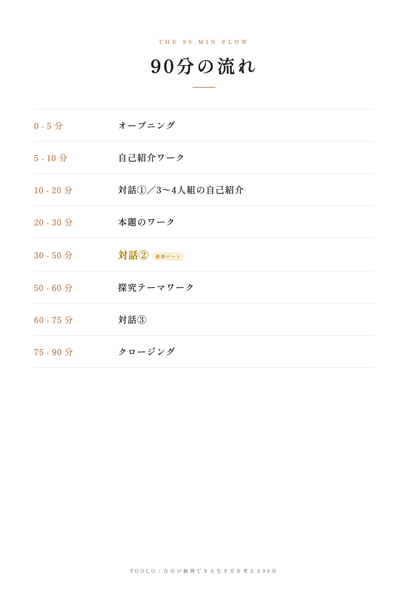
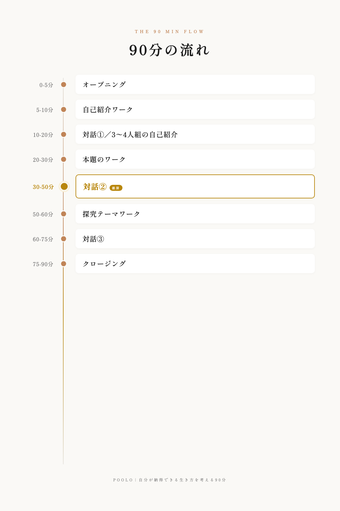
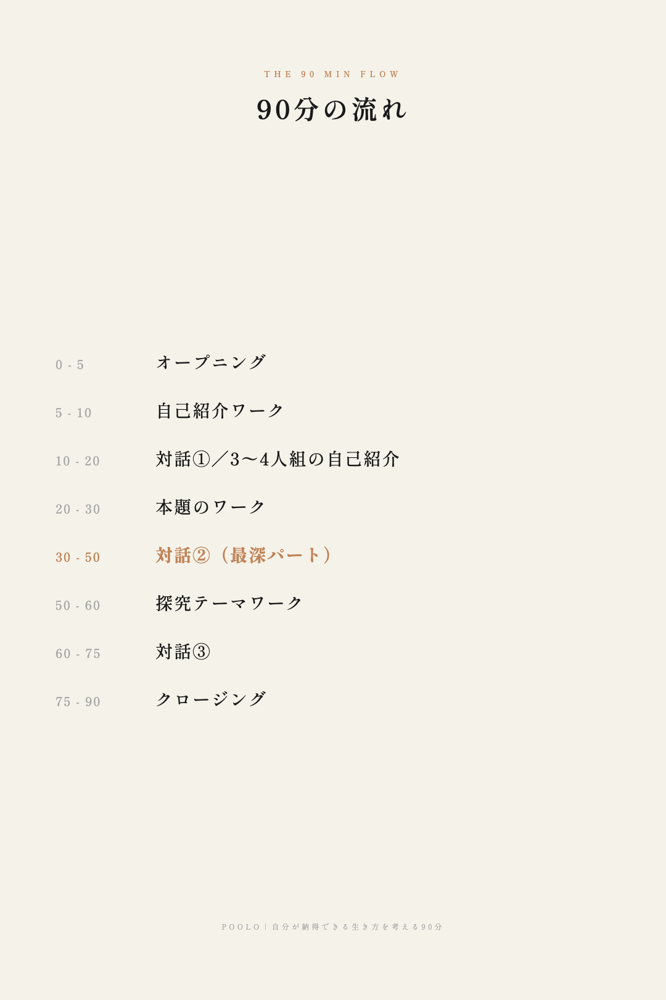

オンラインイベント「自分が納得できる生き方を考える90分」の
タイムテーブルを画像化。全3案・縦長1080×1620。
記事内の情報バナーとして最も馴染む構造。最深パート（対話②）は金色バッジで軽く強調。装飾を抑えて読みやすさ重視。

左に時間、中央に縦軸線＋ドット、右に内容カード。時間経過と構造が視覚的に伝わる。最深パート（対話②）は金枠で囲んで存在感を最大化。

クリーム背景で罫線もドットもなし、時間と内容だけを並べた最もミニマル。POOLOの静謐トーンに最も近い。最深パートはオレンジ色で控えめに強調。
